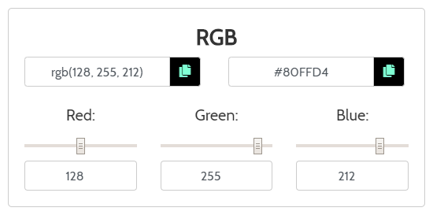

RGB Studios
RGB Studios
Color Convert is a simple color converter and color picker.
Type your color the moment the page loads, in any color mode or by color name.
Or move your mouse around the graphical color picker to find the color you want.
Feel free to type any one of the 140 color names supported by all browsers.

You can convert between four color modes: RGB, CMYK, HSL, and HSV.
Each color mode features sliders and numerical inputs for each attribute, and a text input with all attributes.
Updating one input will automatically convert and update the other inputs.
There are quick copy buttons next to the inputs for your convenience, great for web developers.
Check out the three buttons at the top of the page.
Click the link button to generate a link to your color, and copy the link to your clipboard
Click the reset button to reset the color to black and remove the link
Click the random button for a random color

Read more about this webpage (and its code) on GitHub or check out the README
Read about colors on W3Schools

Image from Wikipedia
RGB stands for Red Green Blue.
Red, green, and blue are the additive primary colors. When light of those three colors are added together, it produces a wide array of colors.
RGB is the color mode used on screens, such as phones, computers, TVs, and other electronic devices.
RGB images are typically created by digital cameras or scanners, as well as graphics designed for the web, computer applications, or other uses on a screen.
NumbersEach pixel on a screen has a red, green, and blue value ranging from 0-255 (256 possible values per color). Each pixel uses three bytes of memory (a byte is 8 bits, enough to store 2^8=256 different values), one byte per each amount of red, green, and blue.
rgb(0,0,0) is the lack of light: black, and rgb(255,255,255) is the maximum amount of light: white. Colors with the same red, green, and blue values are shades of grey.
To go through all of the hues in the rainbow, start with 255 red and 0 green and blue, then add green until you reach 255. Then subtract red until you reach 0. Then add blue until you reach 255. Then subtract green until you reach 0. Then add red until you reach 255. Lastly, subtract blue until you reach 0. This can be seen on the adjacent diagram.

Image from Wikipedia
There are 16.78 million different colors that can be created this way, and each pixel on your screen is one of those colors, described by three bytes. 16.78 million is 256*256*256.
AlphaSometimes people use RGBA, which stands for Red Green Blue Alpha, where alpha is the transparency of the pixel, between 0 and 1 (for example, 0.5 is "half" opacity). This is used for displaying one color "on top" of another.
HexHexadecimal, or "Hex" for short, is an abbreviated way of storing RGB colors. Each red, green, or blue value (0-255) can be stored in two hexadecimal (base 16) digits (0,1,2,3,4,5,6,7,8,9,A,B,C,D,E,F). The pound sign "#" is often included in the front to let us know it's in hexadecimal. Red, green, and blue each have two digits, so each color is six hexadecimal digits.
Sometimes, hexadecimal is abbreviated in only three digits, such as "#369". These are the most significant digits of red, green, and blue, and we assume the next digit is the same, so "#369" would be "#336699".
Hex can also be written in eight digits, where the last two digits are used as alpha, between 0 and 255. This can also be abbreviated as four digits.
Up CloseImage from Wikipedia
Orange and blue pixels on an LCD TV seen up close. Each pixel has a certain amount of red, green, and blue light.

Image from Wikipedia
CMYK stands for Cyan Magenta Yellow Key.
Cyan, Magenta, and Yellow (blue, red, and yellow) are the subtractive primary colors used in printing. When ink of those three colors are mixed, it produces a wide array of colors.
Key refers to black ink used in printing, which can often substitute an equal combination of the other three colors.
CMYK is the color mode used for printing, such as flyers, cards, posters, clothing, and more.
CMYK images are typically created by graphics designed print.
NumbersCyan, magenta, yellow, and key values range from 0-100, representing the percentage of that color used.
cmyk(0,0,0,0) is the lack of color: white, and cmyk(0%,0%,0%,100%) is black. Colors with 0% cyan, magenta, and yellow are shades of grey.

Image from Wikipedia
There are 100 million different colors that can be created this way. 100 million is 100*100*100*100.
CMYCMY is sometimes used instead of CMYK, omitting "key" (black).
HalftoningThrough halftoning, printers combine dots of cyan, magenta, yellow, and key, printed in a pattern small enough that humans percieve them as one solid color.

Images from Wikipedia
Up Close

Images from Wikipedia
Cerulean printed with CMYK, can be seen up close as a combination of cyan, magenta, yellow, and key.